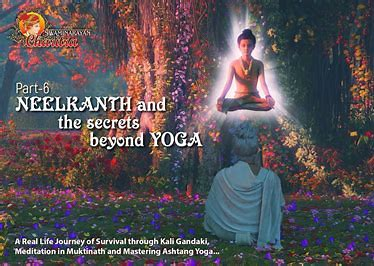
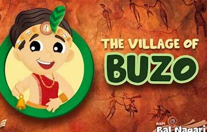
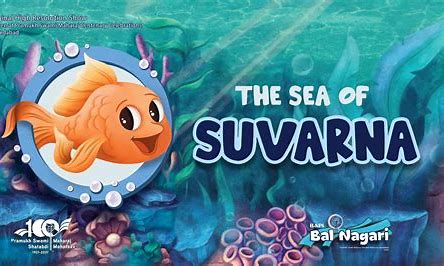

It beautifully describes the chilhood of Ghanshyam -The balswarup of Swaminaryan Bhagwan.
It describes the journey of Neelkanth Varni at the area of Nepal.
It teaches the lessons to the small childerns through a beautiful way.
It passess a message of Hard Work + Prayer = Success through the story of a Fish.